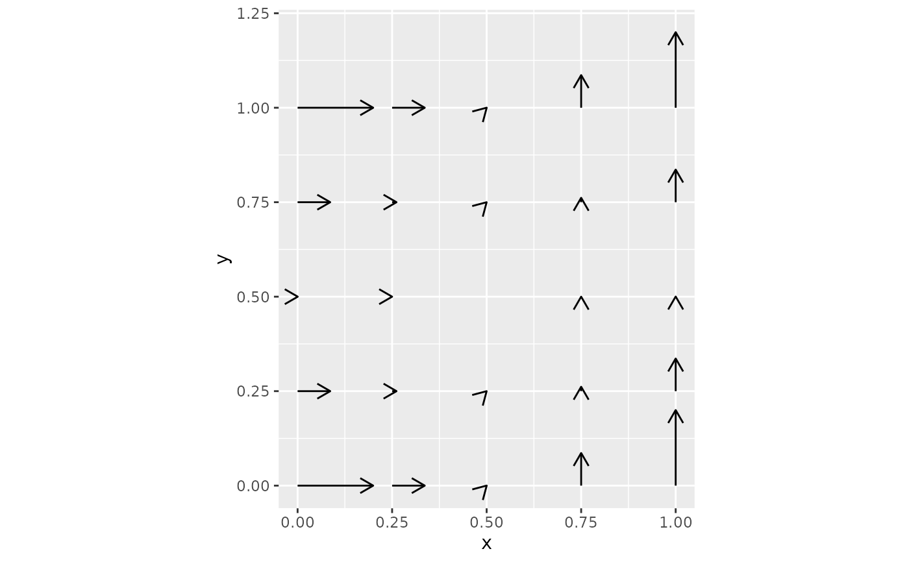

Compute velocity on grid
Usage
compute_velocity_on_grid(
x_emb,
v_emb,
density = 1,
smooth = 0.5,
n_neighbors = ceiling(n_obs/50),
min_mass = 1,
scale = 1,
adjust_for_stream = FALSE,
cutoff_perc = 5
)Arguments
- x_emb
A matrix of dimension n_obs x n_dim specifying the embedding coordinates of the cells.
- v_emb
A matrix of dimension n_obs x n_dim specifying the velocity vectors of the cells.
- density
A numeric value specifying the density of the grid points along each dimension. Default is
1.- smooth
A numeric value specifying the smoothing factor for the velocity vectors. Default is
0.5.- n_neighbors
A numeric value specifying the number of nearest neighbors for each grid point. Default is
ceiling(n_obs / 50).- min_mass
A numeric value specifying the minimum mass required for a grid point to be considered. Default is
1.- scale
A numeric value specifying the scaling factor for the velocity vectors. Default is
1.- adjust_for_stream
Whether to adjust the velocity vectors for streamlines. Default is
FALSE.- cutoff_perc
A numeric value specifying the percentile cutoff for removing low-density grid points. Default is
5.
Value
A list with two components:
x_grid, the grid coordinates, and v_grid, the smoothed velocity vectors on the grid.
References
https://github.com/theislab/scvelo/blob/master/scvelo/plotting/velocity_embedding_grid.py
Examples
x_emb <- matrix(
c(
0, 0,
1, 0,
0, 1,
1, 1
),
ncol = 2,
byrow = TRUE
)
v_emb <- matrix(
c(
1, 0,
1, 0,
0, 1,
0, 1
),
ncol = 2,
byrow = TRUE
)
velocity_grid <- compute_velocity_on_grid(
x_emb = x_emb,
v_emb = v_emb,
density = 0.1,
n_neighbors = 2,
adjust_for_stream = TRUE
)
names(velocity_grid)
#> [1] "x_grid" "v_grid"
dim(velocity_grid$x_grid)
#> [1] 2 5
dim(velocity_grid$v_grid)
#> [1] 2 5 5
head(velocity_grid$x_grid)
#> [,1] [,2] [,3] [,4] [,5]
#> [1,] 0 0.25 0.5 0.75 1
#> [2,] 0 0.25 0.5 0.75 1
head(velocity_grid$v_grid)
#> , , 1
#>
#> [,1] [,2] [,3] [,4] [,5]
#> [1,] 1 4.319277e-01 0.001070642 4.860706e-08 1.266417e-14
#> [2,] 0 4.860706e-08 0.001070642 4.319277e-01 1.000000e+00
#>
#> , , 2
#>
#> [,1] [,2] [,3] [,4] [,5]
#> [1,] 0.4319278 0.05845507 0.0001448956 6.578251e-09 0.0000000
#> [2,] 0.0000000 0.00000000 0.0001448956 5.845506e-02 0.4319278
#>
#> , , 3
#>
#> [,1] [,2] [,3] [,4] [,5]
#> [1,] 0.002141284 0.0002897912 NA 0.0000000000 0.000000000
#> [2,] 0.000000000 0.0000000000 0 0.0002897912 0.002141284
#>
#> , , 4
#>
#> [,1] [,2] [,3] [,4] [,5]
#> [1,] 0.4319278 0.05845507 0.0001448956 6.578251e-09 0.0000000
#> [2,] 0.0000000 0.00000000 0.0001448956 5.845506e-02 0.4319278
#>
#> , , 5
#>
#> [,1] [,2] [,3] [,4] [,5]
#> [1,] 1 4.319277e-01 0.001070642 4.860706e-08 1.266417e-14
#> [2,] 0 4.860706e-08 0.001070642 4.319277e-01 1.000000e+00
#>
grid_df <- expand.grid(
x = velocity_grid$x_grid[1, ],
y = velocity_grid$x_grid[2, ]
)
plot_df <- data.frame(
x = grid_df$x,
y = grid_df$y,
xend = grid_df$x + c(velocity_grid$v_grid[1, , ]) * 0.2,
yend = grid_df$y + c(velocity_grid$v_grid[2, , ]) * 0.2
)
ggplot2::ggplot(plot_df) +
ggplot2::geom_segment(
ggplot2::aes(x = x, y = y, xend = xend, yend = yend),
arrow = grid::arrow(length = grid::unit(0.12, "inches")),
na.rm = TRUE
) +
ggplot2::coord_equal()
